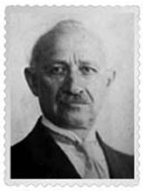

Karekin Deveciyan (1868-1964)
Harput’taki Fransız okulunda okuduktan sonra, İstanbul’daki Lusavoriçyan Katolik Okulu’nda öğrenim gördü. Birçok resmî görevde bulunduktan sonra 1922’de Balıkçılık Başkontrolörlüğü’nden emekli oldu. 1915’te İstanbul’da yayımladığı Balık ve Balıkçılık adlı yapıtıyla alanında bir ilki gerçekleştirdi. Bu kitabın Pêche et Pêcheries en Turquie (Türkiye’de Balık ve Balıkçılık) adıyla yayımlanan geliştirilmiş Fransızca basımı yurt dışında büyük ilgi gördü. Çeşitli gazete ve dergilerde takma adlarla bilimsel konularda pek çok yazı yayımladı ve çeviriler yaptı, balıkçılık terimleriyle ilgili sözlük çıkardı.
